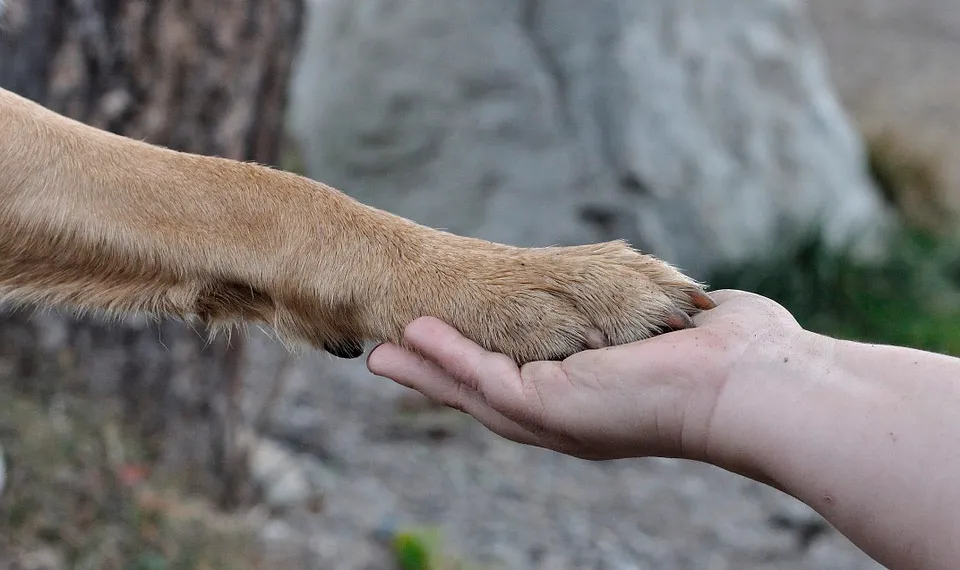
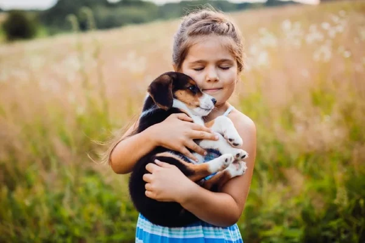

Nuestra Historia
Huellas de Esperanza nació en 2010 con el sueño de dar una segunda oportunidad a perros y gatos abandonados. Lo que empezó siendo un pequeño esfuerzo familiar, hoy es un refugio que ha ayudado a más de 450 animales a encontrar un hogar lleno de amor.
Nuestro Propósito

Misión
Rescatar, proteger y brindar atención integral a animales en vulnerabilidad, promoviendo la adopción responsable y la tenencia consciente.

Visión
Ser el refugio de referencia en Costa Rica, donde ningún animal sufra abandono y la adopción sea siempre la primera opción.

Valores
- Compasión
- Responsabilidad
- Compromiso
- Trabajo en equipo
- Amor y respeto por cada vida
¿Qué Hacemos?
Rescate
Animales en calle o maltrato
Animales en calle o maltrato
Atención Veterinaria
Vacunas, esterilización y tratamientos
Vacunas, esterilización y tratamientos
Adopciones Responsables
Proceso cuidadoso y seguimiento
Proceso cuidadoso y seguimiento